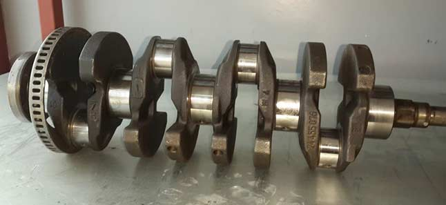

Silindir içerisinde yerleşmiş olan pistonun hareketine bağlı olarak hareket eden bir parçadır. Biyel kolu adı verilen uzun demir alaşımı bir çubuğun bir ucu pistona diğer ucu ise krank miline bağlıdır. Yatay eksende yerleşmiş bir parça olup U harfi biçimindeki çıkıntılardan oluşur. Kullanıldığı motordan motora u harfi biçimindeki çıkıntılar 5 – 10 cm aralıklarla yerleşmiştir. Pistonlar […]
Silindir içerisinde yerleşmiş olan pistonun hareketine bağlı olarak hareket eden bir parçadır. Biyel kolu adı verilen uzun demir alaşımı bir çubuğun bir ucu pistona diğer ucu ise krank miline bağlıdır. Yatay eksende yerleşmiş bir parça olup U harfi biçimindeki çıkıntılardan oluşur. Kullanıldığı motordan motora u harfi biçimindeki çıkıntılar 5 – 10 cm aralıklarla yerleşmiştir. Pistonlar bu çıkıntılara bağlıdır. Hareket mekanizmasının çalışabilmesi için krank mili ve piston arasında 90 derecelik açı bulunması zorunludur. Pistonlar hareket ettikçe biyel kolu hareket eder ve u şeklindeki çıkıntıları sayesinde krank mili de hareket etmeye başlar. Bu hareket dikey eksendeki pistonların yatay eksene çevrilmesi biçiminde devam eder. Krank mili hareket mekanizmasının en önemli parçasıdır. Çünkü tekerlere hareket kabiliyetini yatay eksende kazandıran temel parçadır. Aynı zamanda hareketin güç merkezi olarak ifade edilebilir.
Krank mili hareket mekanizmasının en önemli parçalarından birisidir. Pistonlar silindir içerisindeki enerjiyle hareket ettikçe bir ucu pistona diğer ucu krank miline bağlı olan biyel kolları hareket etmeye başlar. Biyel kolları ise hareket ettikçe krank millerinin u şeklindeki çıkıntıları dönmeye başlar ve hareket mekanizması tamamlanmış olur.
Biyel kolu dikey eksende hareket eden bir çubuktur. Pistonlar Üst Kör Nokta ve Alt Kör Nokta arasında dikey eksende hareket ettikçe pistona bağlı olan biyel kolları da dikey eksende hareket etmeye başlar. U biçimindeki çıkıntıları sayesinde biyel koluna bağlı olduğundan dikey düzlem boyunca hareket eden biyel kolunun hareketini dairesel harekete çevirir. Yani temel görevi dikey eksendeki hareketi yatay eksene çevirip tekerlere hareket kabiliyeti kazandırmaktır.
Önemli işlevine paralel olarak dayanıklı olması gereken bu parça ya Sfero demir ya da çelik alaşımlı dayanıklı bir malzemeden üretilir. Bu maddeler yüksek sıcaklığa ve deformasyona karşı dayanıklı olup uzun süreli kullanım sağlamaktadır. Günümüz teknolojisi ile enjeksiyonlu motorlar üretilmiştir. Bu motorlar yüksek devir kapasitesiyle dayanıklı olmayan malzemelere kısa süre içerisinde zarar verebilmektedir. Dolayısıyla gelişen teknoloji her motor parçasını da güçlendirmesi gerekmektedir. Belirtilen Sfero demir ya da çelik alaşımının dayanıklılığın yetersiz kaldığı motor türlerinde titanyum kaplama işlemi uygulanmaktadır.
Enjeksiyonlu bu motorlar titanyum kaplı krank milleri ile uyumlu bir performans göstermektedir. Titanyum malzemesi bilinen en sert metaldir. Tabii ki bu kaplama işleminden önce indüksiyon ve sıcaklıkla sertleştirme işlemi diğer adıyla ısıl işlem uygulanmaktadır. Isıl işlem olarak adlandırılan bu uygulama metalin lav benzeri yanar bir sıvı içerisinde kontrollü biçimde bekletilmesidir. Bu bekletme süreciyle birlikte metal son derece sert bir yapı kazanmaktadır.
Günümüz enjeksiyonlu motor kullanan araçlarda titanyum kaplı krank milleri kullanılmaktadır. Bu kaplamanın maliyeti standart bir krank miline göre daha yüksek fiyatlardadır. Ancak sürekli hareket halinde olan krank milindeki sürtünme katsayısı referans alında enjeksiyonlu motorlar standart bir krank milinde alacağı kısa mesafeyle korozyona neden olur ve yenisiyle değiştirilmesi ihtiyacını doğurur. Bu durum da titanyum kaplamanın başlangıç maliyetini çok daha ekonomik bir fiyata çeker.
Krank Milinin çalışma mekanizması
Biyel kolunun doğrusal hareketini dairesel harekete çeviren krank mili kendisine bağlı olan trigel kayışı adını verdiğimiz parça yardımı ile kam milini hareketlendirir. İçerisinde yağ kanalları bulunan bu parça sürekli yağlanma işlemi ile aşınması önlenmektedir. Yağ kanalları kendisine bağlı olan vakumlu yağ pompası aracılığıyla uygun yağ tipini ve yoğunluğunu parça üzerine püskürtmektedir. Aynı zamanda Krank miline bağlı olan volan mekanizması sayesinde motorun ilk momentumu korunmuş olur. Volan mekanizması bir disk şeklinde olup ateşleme yani yakıt yanması olmadığı durumlarda bu mekanizma sayesinde motorun ilk momentumu sabit kalır. Yatay eksende bulunan mil u şeklindeki parçalarla 90 derecelik açı yaparak bağlandığından dönüş boyunca yuva ve mil arasında sürtünme minimize edilir. Bu parçada açının muhakkak 90 derece olması gerekir aksi takdirde dışarıya doğru uzanmış çıkıntılar yatay eksende yer alan mile, yağlanma şiddeti ne kadar çok olursa olsun çarpacak ve bir süre sonra kırılmasına neden olacaktır.
Krank milinin genel arıza sebepleri nelerdir?
Sürtünme kuvvetini engelleyici niteliğe sahip olan motor yağının istenilen seviyenin altında olması ya da tamamen bitmesi başlıca arıza sebebidir. Yağın kanallar aracılığıyla krank mili üzerine püskürtülmesini sağlayan vakumlu pompanın arızalanması ya da kanallarda meydana gelen herhangi bir tıkanma neticesinde püskürtme basıncının düşük olması krank milinin yağlanamamasına dolayısıyla deformasyonuna neden olur. Yağ kanallarından püskürtülen yağın ince olması ya da yağlama için uygun nitelik bulundurmaması. Krank milinin yatay eksendeki metalinin yatak yuvalarının çizinmiş olması ya da aşınmış olması başka bir arıza sebebidir.
Krank milinin u harfi biçimindeki çıkıntılarının yanlış biçimde bağlanması çalışmamasına neden olur. Bu durum genellikle yeni takılan parçalarda geçerli olmaktadır. Yaklaşık olarak 90.000 km meydana gelen çatlaklar da bu parçanın çalışma potansiyelini düşürür ve kısa bir süre sonra kırılmasına neden olur. Bu arızayı önlemek son derece önemlidir. Aksi takdirde zamana bağlı olarak arıza çapı büyüyecek ve yüksek maliyetli problemlere dönüşecektir. Yukarıda belirtilen hatalarla birlikte Krank mili ya da yaygın kullanım adıyla ana mili arızalarında bu parçanın konumlandığı noktada birtakım metal sesleri gelmeye başlar. Metal sesleriyle birlikte arıza olduğu anlaşılabilir.
Yatak sesi olarak adlandırılan bu problemin meydana gelme sebepleri ise şu şekildedir. Yağlanma seviyesinin uygun değerde olmayışı, yani ya fazla ya da az oluşu. Herhangi bir yatakta boşluk meydana gelmiş olması. Bu durum daha sonra diğer yataklar dada boşluk meydana getirip arızanın büyümesine neden olabilir. Ana milinin yatay eksende yer alan metalinin 90 derecelik açıyı bozacak biçimde bükülmüş ya da esnemiş olması.
Ana yatakların parçaya uygun konumda hizalanmamış olması. Vakum pompası aracılığıyla püskürtülen yağın yoğunluğunun az olması, yani su oranının fazla olması. Krank miline bağlı olan triger kayışı ya da çark mekanizmasının gevşemiş olması, aynı zamanda korozyona uğramış olma durumları söylenebilir. Krank milinde başlangıç kısmında hareketi başlatan parça bulunur. Bu parça kurt dişlisi adını almaktadır.
İlk hareket kolunda kurt dişlisi, damper ve yatay eksende yer alan krank mili dişlisi yer alır. Diğer baş kısmında ise volan bulunmaktadır. Volanda meydana gelen gevşeme, ya da yerinden çıkma durumu yukarıda belirtilen arızaların meydana gelmesine sebebiyet verebilir. Son olarak belirtilen arızalara sebebiyet veren diğer unsur üst karterde meydana gelen eğilmedir.
Krank mili mekanik bir parça olduğundan bu yapıda meydana gelen arızalar genellikle kırılma biçimindedir. Kırılmalar ise farklı sebeplerden dolayı ortaya çıkabilmektedir. Krank milinin kırılmasındaki en temel husus doğru oturtulmamasıdır. Belirtildiği üzere mil ve çıkıntılar arasında 90 derecelik bir açı olmak zorundadır. Aksi takdirde hareket sırasında mil ve çıkıntıların köşeleri birbirine çarparak mekanizmanın kırılmasına neden olacaktır.
Meydana gelen başka bir arıza tipi ise korozyon / deformasyondur. Metallerin sürtünme kuvveti etkisinde aşındıkları bilinmektedir. Deformasyonu yani korozyonu engellemek için krank milinden pompa vasıtasıyla yağ püskürtülür. Püskürtülen yağ hareket boyunca kayma meydana getirerek kırılmanın önüne geçer.
Eğer yağ kanallarında tıkanma varsa püskürtme yapılamayacağından metaller birbirine sürtünerek krank milinde aşınmalara neden olur. Başlangıçta verimsiz çalışma, motor çekiş gücünün azalması gibi problemlere neden olan bu korozyon durumu daha sonra yüklenme ile birlikte kırılmalara neden olur.
Krank milinde meydana gelen korozyon sebeplerinden birisi yağ kanallarının tıkanmasıyla birlikte ince yağ kullanılmasıdır. İnce yağlar sürtünme kuvvetine etkisi az olduğundan arızanın önüne geçemeyecektir. Bu durumu önlemek amacıyla kullanım kılavuzunda belirtilen uygun değer yağ ve yağ oranını ayarlamak yeterli olacaktır.
Öncelikle belirtmek gerekir ki bu parçada meydana gelen en ufak arıza motorun kalıcı olarak kullanım dışı kalmasına neden olabilir. Bu nedenle arızanın tespit edilmesiyle birlikte doğrudan değişim yapılması önemlidir. Yukarıda belirtilen arızalar ve etmenler tespit edildiği durumda düzeltilmediği takdirde motora yansıyacak olan sürtünme kuvveti, sıcaklık, triger kayışı kopması, milin parçalanması gibi durumlar aracınızı da tamamen devre dışı bırakabilir.
Ana milinin bazı arıza durumlarında motor arıza lambası yanmaktadır. Arıza lambası çeşitli durumlardan ötürü de yanabilmektedir. Bu nedenle lambanın yandığı her durum kesinlikle krank milinde arıza olduğunu göstermez. Bu parçada meydana gelen arıza ateşleme sisteminde de çeşitli problemler meydana getirdiğinden kırılma meydana geldiği takdirde ateşleme yapılamayacağından araç düğün biçimde çalışamaz. Aynı durum sürtünme etkisiyle meydana gelen aşınmadan da kaynaklanabilmektedir.
Araç hareket halindeyken ya da çalıştırma esnasında marşa basıldığı gibi tekleme yapıyorsa bu durum da krank milinin bozulduğunu işaret edebilmektedir. Genellikle araç sürat halindeyken tekleme meydana geliyorsa ana milinin bozulma ihtimali daha yüksektir. Ayrıca aynı durum araç hareket halindeyken stop etme biçiminde de görülebilmektedir.
Krank mili arızasından kaynaklı, araç seyir halindeyken stop ettiği durumlarda motorun soğuması beklenir. Motor soğumadan aracı tekrardan çalıştıramıyorsanız yine ana mili arızasından şüphe duyabilirsiniz. Krank milinde yer alan sensörler tamamen arızalı hale gelmişse motorun soğuk ya da sıcak olması bir şeyi değiştirmez. Stop ettiği yerde kalır. Yani çalıştırılamaz hale gelmiştir.
Ancak bu durum çok sık rastlanan bir arıza değildir. Genellikle sensörler çalışır vaziyette olduğundan motor soğuduğunda araç tekrar çalışır vaziyete getirilebilmektedir. Son olarak krank milinin yataklarından gelen sesler de arıza tespitinde kullanılabilir. Metal parçaların yatağa yaptığı vuruntu sesleri motor çalıştıktan 4-10 saniye sonra anlaşılır vaziyette duyulabilir.
Metal sesleri aracın yoğunluğuna ve hızına bağlı olarak artış gösteriyorsa yüksek ihtimal ana mil ve yatak arasında açı problemi oluşmuş ve sürtünme meydana geliyordur.
Bu madeni sesler özellikle enjeksiyon motor kullanılan son model araçlarda kullanılan krank millerinde rastlanmaktadır. Yazımızda belirtildiği üzere motorun kalbi olarak adlandırılan bu parça bütün parçalarla ilişkilidir. Triger kayışı, kam mili, piston, biyel kolu şeklindeki bütün motor parçalarıyla senkronize çalışan ve son hareketi yatay eksende tekerlerin hareket etmesi için kullanılan bir parçadır.
Dolayısıyla arıza meydana getirdiği durumda kesinlikle bekletilmeden bir servise götürülmelidir. Aksi takdirde çok daha büyük ekonomik kayıplara neden olacaktır. Arıza meydana gelmeden önce de bu parçalar sürekli hareket halindeki parçalar olduğundan yaklaşık olarak 90.000 kilometrede bir bakımının yapılması gerekir. Eğer ilk bakımda problem yoksa ikinci bakımda her araç için değiştirilmesi tavsiye edilmektedir. Aynı zamanda krank mili tercih edilirken araç fiyat aralığınızın yüksek olması durumunda ısıl işlem görmüş, indüksiyonla sertleştirilmiş, titanyum kaplama yapılmış krank mili tercih etmeniz önerilmektedir.